❤️Welcome to our
Final - Presentation

Disclaimer
This Template was created by and for the Groups from TaskHub, Betterzon and PlantsHub.
Contents - understanding our Business
- Our Project
- Our Vision
- Use Cases (incl. Scopes)
- SRS
- nonfunctional
- Scope
- Project Methodology
- Project Managememt
- RUP + Burndown
- Long Term Planning
- Scrumming
- Iterative Process
- Cost Estimation
Contents - technical ability
- Live - Demo
- Tools we used
- Live Demo
- Extend of functionality
- Visual representation of Code and Architecture
Contents - Quality
- Architecture
- Configuration
- Automation
- Continous Integration
- Risk Management
- Testing
- Patterns
- Metrics
Seperation
Every Symbol stands for one Person in this Room which is addresed in the presentation it is shown here ↗
- → Maintaining our Code
- → Head of IT
- → Buisness Client
- → Client User
Speaker
↖ Every Symbol stands for one Speaker
- → Nico Holzhäuser
- → Kristin Agne
- → Danny Kroll
1. Understanding OUR Buisness Needs
1.1 Our Project
1.1.1 Our Vision 🔮
- Collaborate App
- Simultaneously Editing or Creating Files
- Task Management
- Setting Deadlines
inspired by an CTF Tool from StratumArthuut

1.1.2 Use Cases (incl. Scopes)

1.1.3 SRS

1.1.4 non-functional
- Easy to understand
- No Overloaded Features/UI
- Backup Features
- Very Fast
- Lightning Speed Performance
- Lightweight
- Minimalistic
1.2. Project Methodology
Scrum
For our Project Methodology we use the commonly used Methodology of Scrum

1.3 Project Management
1.3.1 RUP
RUP for the First Semester

1.3.1 RUP
RUP for the Secound Semester

1.3.2 Scrumming

1.3.2 Scrumming
First Sprint 06.11.2020 - 16.11.2020
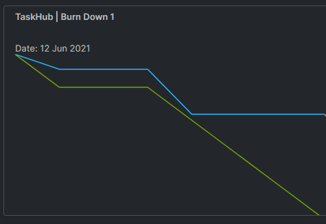1.3.2 Scrumming
Secound Sprint 20.11.2020 - 27.11.2020
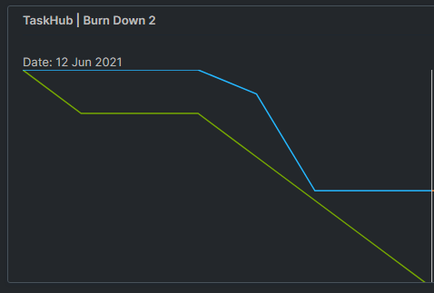1.3.2 Scrumming
Third Sprint 03.05.2021 - 10.05.2021
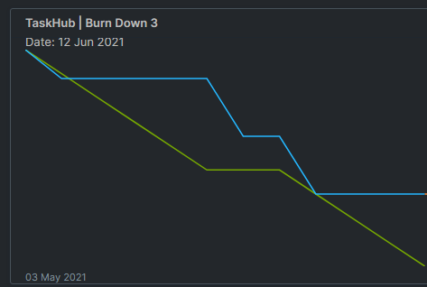1.4 Iterative Process
With Scrum we are following an iterative Process, which adjusts itself on every Elaboration

1.4.1 Why we chose an Iterative Process
- constant Comparison with the requirements
- ➜ high Quality
- Low risk
- Test possible after each iteration of the product
- Fast results
1.5 Cost Estamination
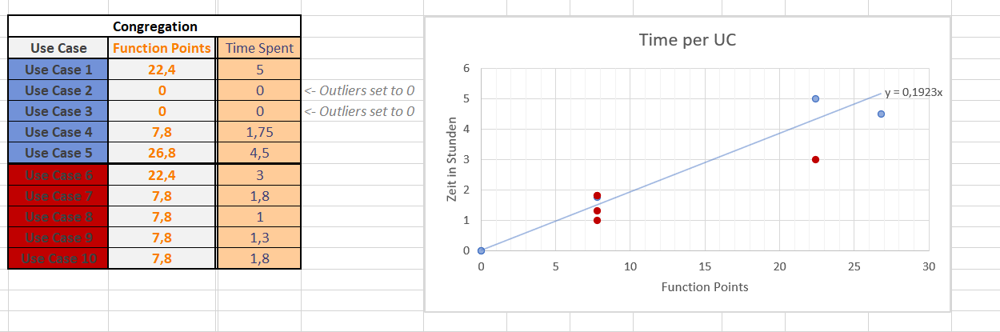- Two UC( 7 & 10) are over the Estimation so the Project costs more than planned!
- ➾ Should stay on Plan because UC 6,8,9 are under Estimation
- ➾ 0h above est.
2. Technical ability
2.1 Demo
2.1.1 Tools we used
- Git -

- IntelliJ -

- YouTrack -

- Postman -

2.1.2 Live Demo with Fred
⬆️this is Fred
2.2 Extend of functionality
2.2.1 Extend of functionality - Backend
- we are using Frameworks to sync our Database / Sequelize
- ➾ Easy to add Tables and Objects
- we are using Best practices to design our APIs and Services
- ➾ Easy to understand and extend
- NPM as a Package Manager
- ➾ Easy to add more Packages
2.2.2 Extend of functionality - Frontend
- Component Design
- ➾ Easy to add new Components
- Component driven Architecture
- Interchange Components easy
2.3 Visualisation of our Code
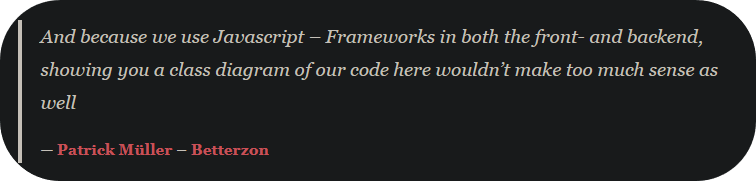
So here is our used Stack instead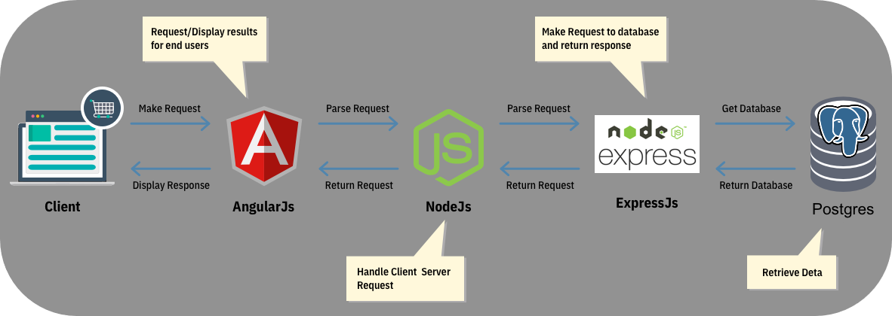
3. Quality
3.1 Architecture
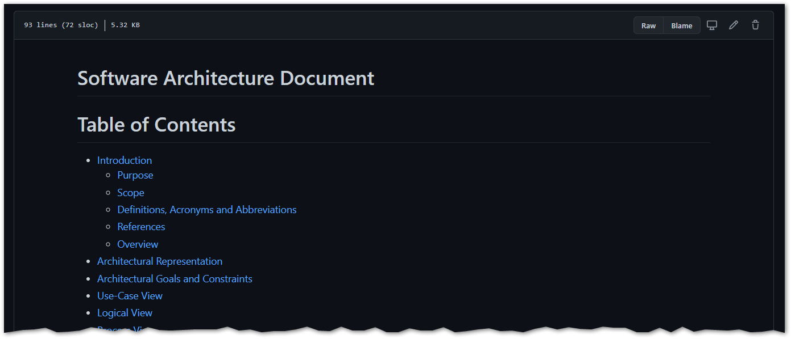3.2 Configuration

3.2.1 Automation
Automated Code Reviews by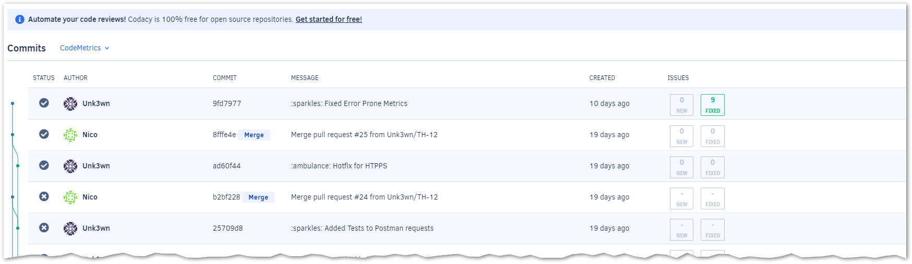
3.2.2 Continous Integration
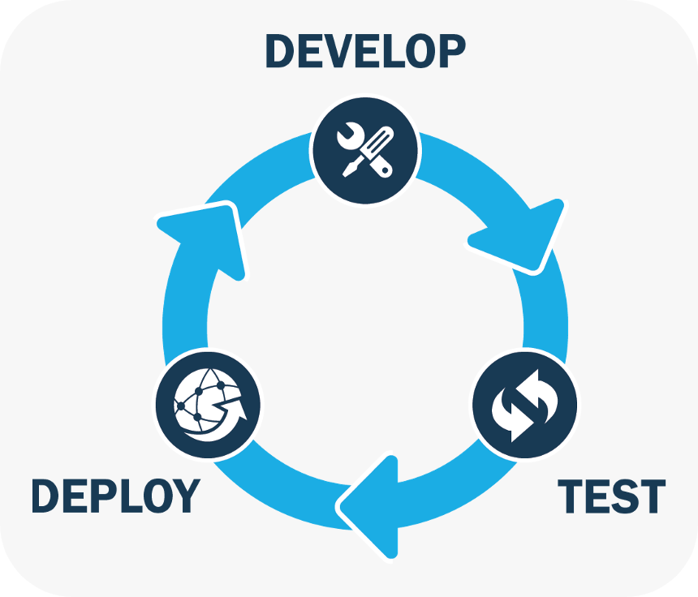3.2.2 Continous Integration @ Pull Request

3.3 Risk Management
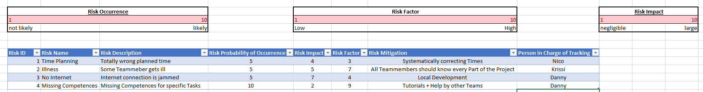You can view our Table here on Github in our Repository
3.4 Testing
with3.4.1 Testing Backend
with Postman - 

3.4.2 Testing Frontend
with Karma - and Jasmine -


3.4.3 Testing Frontend
with Cucumber - 
Detailed Video of our Cucumber Tests can be found here
3.5 Design Patterns
3.5.1 Patterns - Backend - ExpressJS
ExpressJS uses the following Code Patterns in it's Framework Code
- Singleton

- Prototype

3.5.1 Patterns - Frontend - Angular
Angular uses the following Code Patterns in it's Framework Code
- Patterns Observers

- Dependency Injection

3.6 Metrics
Automated Code Reviews by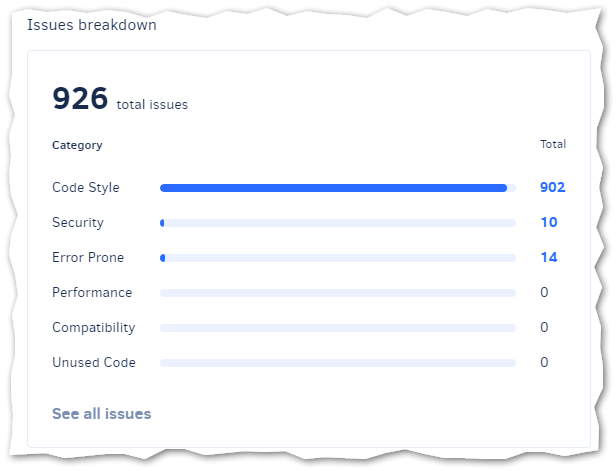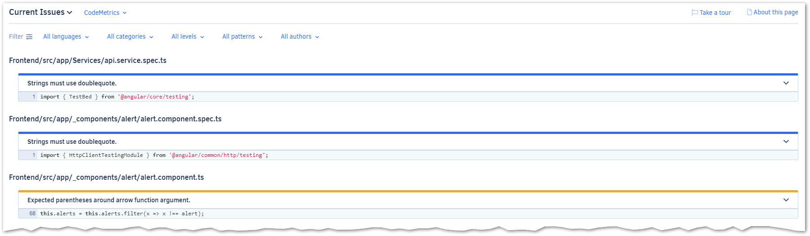
🔍 Out of Scope
📝 Handout
Time Overview
| First Name | Second Name | Project(hours) | |
|---|---|---|---|
| Kristin | Agne | agne.kristin@student.dhbw-karlsruhe.de | ~ 85 |
| Project Management, Blog, PeerReview, Testing | |||
| Danny | Kroll | kroll.danny@student.dhbw-karlsruhe.de | ~ 85 |
| Angular Frontend, YouTrack, Presentation, GitHub | |||
| Nico | Holzhäuser | holzhaeuser.nico@student.dhbw-karlsruhe.de | ~ 110 |
| Infrastructure, Backend, Database, Organisation | |||
Use Case Diagramm
Print your own Handout
Look at the Printing Tems on Top Right ↗
~ not working with
 Sorry 😔
Sorry 😔